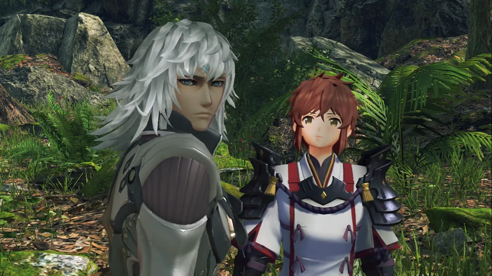
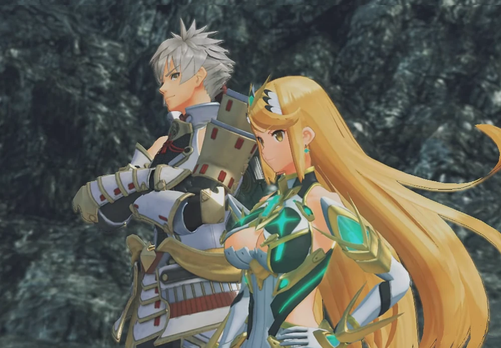
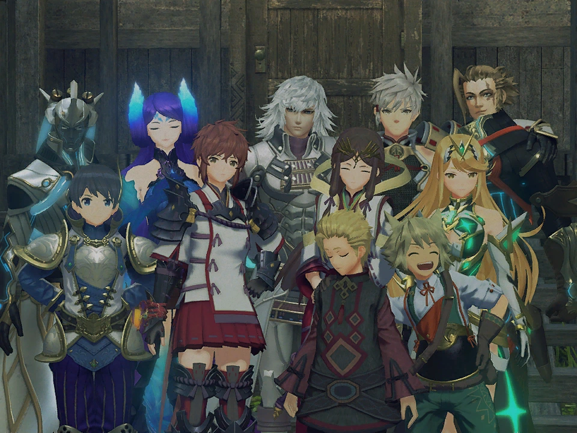

Plot
The 107th Praetor Rhadallis dispatched an armed expedition to the Coeian Titan in year of 3564. The Cloud Sea submerged the Titan's capital, Omrantha, along with the rest of the ship. Malos, one of the Aegises, was responsible for the crime, which was mistakenly ascribed to a coalition between the Indoline Praetorium and the Empire of Mor Ardain. Malos can be seen destroying the Coeian Titan with his Siren.
A gang of Volff, Feris, and Buloofo, driven mad by the blood's stench, are pursuing Jin and Lora in Lasaria. The two fight after they are caught at a dead end.
Lora returns Jin's blade to him, but before Jin can defeat the Volff, it attacks her. Jin understands that one of them is rendered helpless by their unusual method of fighting—sharing a weapon. Jin and Lora depart the woodland after Jin reminds Lora of his pledge to protect her.
When Lora and Jin discover a destroyed Porton Village, they find the lone survivor, Mikhail. Jin understands that the town was burned down by other people, not by Malos himself. Mikhail discloses that he has no family and was sold to the community from Estham. Despite his misgivings, Mikhail accepts Lora's invitation to accompany her and Jin on their journey.
When Praetor Rhadallis returns to Indol, Magister Baltrich informs him that the capital of Coeia, Omrantha, has been destroyed. The Praetor then responds that the Architect would be happy with their work, dismissing Baltrich's concern about whether Malos, Quaestor Amalthus' Blade, can actually be controlled.
Jin and Lora talk about the village's demise; Jin intends to tell their mercenary squad about it. The following day, they plan to meet up with Haze, who is out trying to find Lora's mother, at Feltley Village. When they reach Feltley Village, they discover that Malos has once again destroyed it. A gargoyle attacks Jin and Lora as they explore the crater created by Malos' siren. They are rescued from the Artifice by Addam and Mythra. Jin, whose Core Crystal was taken seventeen years ago, is identified by Addam as the Paragon of Torna. The two pairs then fight after Addam questions whether to bring Lora in.
To Mythra's amazement, Jin and Lora fought the battle hard. Addam halts the altercation and starts praising Jin and Lora's power and unity. Lora says they were broke and couldn't afford a second weapon when asked how they came up with the idea of passing one. When Milton and Haze reach the destroyed village, Jin identifies Addam as the Lord of Aletta and the fourth heir apparent. Haze is credited by Milton with saving him from several monsters. After that, the two groups made camp together.
Jin and Lora disclose their past and their decision to join a mercenary organization in order to aid the planet. Mythra contends that the world goes on regardless of what individuals do, but Jin disagrees and points out that Mythra has no empathy for others. Addam then devises a cover narrative and consents to not report Lora for stealing Jin's Core Crystal. He then requests that Jin, Haze, and Lora accompany him in his mission to vanquish Malos, and they consent. Jin's previous remarks have hurt Mythra, but Addam points out that by separating herself from people, she loses some of the organic process by which a Blade's personality grows.
Haze reports that she has located Lora's mother in Torigoth the next morning. Coeian and Ardainian soldiers have fought there on a regular basis, Addam says. He then chooses to accompany Lora to Gormott, pointing out that Malos would find it a desirable target. Gort and his Blade listen in on the conversation from a distance. Then, before going for Lora and Jin, he informs his companions that he stole some Core Crystals from the community.
The gang proceeds to Torigoth after arriving at Gormott. When they get there, they discover Torigoth destroyed by fire. Addam chastises Mythra for her lack of empathy for the situation. But Lora is still hopeful that her mother ran away before to the assault. As they continue inside the village, they come into Torigoth Cemetery, where a man who most likely perished was buried alongside the residents of Torigoth. After that, Lora spots a grave with a charm she crafted for her mother as a little girl. Jin consoles Lora as she starts to cry.
When the gang returns to the settlement's main area, Ardainian soldiers surround them, thinking they are the brigands that destroyed the village. When Brighid gets there, she fights alongside the group. Brighid calls Mythra's fighting technique hefty and crude during the conflict. In response to Addam's entreaty, Mythra fires Siren's particle cannon, which Brighid barely avoids. Lora chastises Mythra for not listening to Addam after Haze uses her power to control Mythra and Brighid's power. The war is then declared over when Emperor Hugo, Aegaeon, and the Special Inquisitor reach the settlement and give the soldiers the order to dismount.
Hugo discloses that his brother is in power while he is away and that he has also arrived to pursue Malos. According to Addam, Hugo was given both Brighid and Aegaeon because his brother was incapable of becoming a Driver. The Special Inquisitor is instructed to recover their Core Crystals in the event that Hugo is killed in combat. Hugo and Addam then briefly discuss how neither of them finds the prospect of ruling especially appealing. To decide on the next course of action, Aegaeon recommends that the group return to the Ardainian flagship. Lora takes Jin to the flagship, but she and Haze remain to decorate the graves. Mythra tries to stay behind, but Addam makes her accompany him.
Rhadallis and Amalthus used to take Malos to a special room in Indol. Rhadallis displays a relic called the Aegis, a divine treasure that Meldinare, the founder of Indol, is claimed to have taken from the Architect. Malos then proclaims himself the new Aegis and destroys the item.
Amalthus and Stannif are seen walking down a hallway in the present. Stannif notes that Amalthus cannot continue to hide behind Rhadallis and that Baltrich is upset at Amalthus' elevation to Quaestor. After that, Stannif shows Amalthus a research chamber that was formerly only accessible by the Praetor and himself. By examining Judician technology found near the Land of Morytha, he learned that the Blades will eventually become Titans and that Core Crystals hold information on all living things. Stannif offers to assist Amalthus in achieving his vague objectives.
Addam learns aboard the Ardainian flagship that Torigoth was devastated by renegade Coeian forces. After that, Aegaeon momentarily departs the ship to look into a loud noise. According to Addam, when he first met Amalthus, he was shocked to learn that the other Aegis was a girl, but he also pointed out that a Blade's looks had nothing to do with their ability. Even though he seemed to smile a little at the end, he instructed Addam and Mythra to remove Malos from Alrest. In an effort to maintain secrecy regarding the Malos situation, Indol has provided funding to Addam's militia through Argentum. Addam says he aspires to one day put down his sword and cultivate the land, even if his cover as Mythra's Driver might be exposed. Then, Aegaeon returns with news of a strange mercenary group en route to the outskirts of Torigoth. Jin quickly exits the battleship after sensing danger, and the others soon follow.
Lora and Haze are subsequently ambushed at the graveyard by Gort and his mercenary crew. Gort, who was aware of Haze's power and did not bring any blades with him, tries to murder Lora and take back Jin as his own Blade. The mercenary gang is then engaged in combat by Lora and Haze.
Jin shows up as the mercenaries are starting to encircle Lora and Haze. To the dismay of Gort, he overcomes several mercenaries and amputates his left and prosthetic arms; Addam, Hugo, their Blades, and Ardainian forces barricade the escape. Jin tries to murder Gort, but at Lora's request, he stops. After that, Gort runs away, and a few Ardainian troops make a fruitless attempt to apprehend him. When Addam asks why she allowed him to go, Lora says she didn't want him to pass away in front of her mother's tomb. After that, the gang departs for the Ardainian flagship. Later, Gort is shown rushing through Gormott; he eventually stumbles and encounters a gang of Indoline Monks under the leadership of the Stannif.
To Addam's resentment, Hugo discloses that the Kingdom of Uraya has now taken control of his militia. Through Aegaeon, Addam instructs his militia to meet him in Aletta. Later, on the outside of the flagship, Lora runs into Addam. She says that was the first time she had ever seen him seem angry, but Addam says he has been anxious ever since he became Mythra's Driver. He points out that Malos deserted his militia in the hopes of better understanding Mythra's strength because he was unable to manage Malos, which is why he attacked Alrest. Lora goes on to say that Mythra must be a good person at heart because she does not appear to be using all of her strength out of dread of this. Addam wishes for more time, which they do not have, but Lora suggests that he will gradually come to master Mythra's strength.

After that, the gang leaves for Aletta. When Addam arrives, a sizable crowd welcomes him. Hugo identifies Addam's manor nearby and explains that Aletta is his territory. He also mentions how far away Auresco, the capital, is from Aletta. Despite being fourth in line for the throne, Addam is adored by both troops and civilians, according to Aegaeon; Brighid indicates that this causes tension in his relationship with High Prince Zettar.
Milton and Mikhail start preparing the evening meal. Mythra tries to assist, but Jin handles the cooking and Addam asks to spar with her against Lora. Lora controls Mythra's skills during the sparring by using Haze's power. When Jin announces that dinner is ready, she breaks up the sparring session. Brighid, who intended to participate in a sparring session, is disappointed when she arrives late. Mythra talks about how Driver and Blades work together, and Addam says he hasn't yet discovered Mythra's full potential. Because of their close relationship, Mythra observes how similar Haze and Lora seem. Addam then offers to spar Jin, but Jin declines.
A soldier shows up and tells Addam that Malos intends to attack the capital; he told Amalthus about his scheme to awaken the Tornan Titan, and Amalthus told Torna about it. After that, the group departs for the capital.
The group gets assaulted by a Slithe Jagron, a creature indigenous to Leftheria, while traveling to Auresco. The Jagron tries to attack Milton and Mikhail at one point during the fight, but Minoth shows up and saves the kids. The party fights again after Addam identifies him as Amalthus' Blade. Although Addam advises him to keep it a secret, Minoth discovers that Jin is the Paragon of Torna during the battle after seeing Jin and Lora's distinct fighting styles.
Following the fight, Minoth exposes himself to be a Flesh Eater—a creature created by Judician science that possesses both human and Blade cells. Jin becomes interested in the topic as he speculates that he might have been a botched experiment. According to Minoth, he hasn't seen Amalthus in two years; he was on the scene when Amalthus saved an infant from a robber at a house. Amalthus claimed that life on Alrest is not all that different from hell itself, and that he originally hoped the Architect would redeem humanity, recalling that the thief was the same soldier he had previously aided.
Shortly afterward, Amalthus ascended the World Tree and returned with the Aegis cores, which were supposedly revelations. Minoth disputes this, pointing out Malos' devastation and questioning how anybody could think that salvation was possible. When he inquires as to whether Mythra shares his sentiments, she discloses that she has no interest in people. Addam asserts that Mythra has good intentions in spite of this. Minoth considers meeting the Architect himself when Milton makes fun of Mythra's ravenous appetite.
At camp, Minoth states that all Blades and Drivers should aim to establish a strong link like Jin and Lora's, praising their fighting style as a sign of such bond. Lora assures Haze that she will take the initiative tomorrow after Haze complains about her prejudice toward Jin.
To hone his swordplay, Addam gets up in the middle of the night. He is joined by Mythra, who inquires as to whether he can recall their initial encounter with Amalthus. Mythra observed after that encounter that Amalthus appeared to be concealing his actual intentions. Mythra called him a hypocrite after Addam pointed out that he was the one who established Indol's refugee policy. Mythra said that she would endorse Addam's opinion when he questioned if she believed that humans were worth rescuing. Mythra observes that Minoth's remarks might be applicable to both Malos and Amalthus back in Torna. Addam assumes she is not serious when she asks whether humanity truly wants annihilation. Mythra observes that while Addam intends to till the land following Malos' defeat, others might not be all that happy with it.
Stannif returns Gort's body to Amalthus in Indol. Stannif suggests that they utilize Gort as the first Blade Eater test subject when Amalthus discloses that he recruited Gort as a Core Crystal trader. Stannif discloses that despite Amalthus's skepticism, his strength will increase significantly and that, even if he goes rogue, his body would eventually degenerate and he will pass away. Stannif points out that Gort's relationship with Jin makes him even more valuable as a Blade Eater. Amalthus is worried about what will happen when Malos loses, not about his goal for Torna.
After reaching Hyber Village, the gang chooses to spend the day there. Although Jin has no recollection of the settlement, he observes that it appears familiar. A man who knows Jin as Ornelia's former Blade walks into Jin and Lora's room at the inn. When Jin accepts the man's invitation to visit his former home, he discovers a group photo with Ornelia and his previous notebook, in which he detailed the steps that need to be took to become a Flesh Eater. Jin says he doesn't recall much of his background and decides not to share the journal with Lora. When Lora sees the picture of Jin with Ornelia, she is momentarily enamored with Jin and proposes that they take a picture together. Nevertheless, the picture becomes a group portrait that includes every party member.
Lora speaks with Mikhail and Milton that evening. According to Milton, he has been traveling for three years with Addam and for a year with Mythra. He claims that his community ran out of supplies during a conflict and, in a last-ditch effort to obtain more resources, strip-mined a neighboring mountain, resulting in a devastating flood. Addam was one of the few who assisted the village in recovering, and he has since accompanied him on his travels. According to Lora, Jin was awakened at the age of 10 by her,and her mother worked as a maid. She wants to help other orphans like herself, Mikhail, and Milton. Milton says he is smiling inside, but Mikhail doesn't reply.
Mythra watches the conversation from a distance. Addam encourages her to participate in the discussion and avoid drawing attention to herself because she is an Aegis. Lora worries that the children may join them in the battle against Malos when they return to the inn. She tries to discuss it with Addam, but she ends up talking to him in the morning after hearing a brief argument between Mythra, Milton, and Addam in the next room. Addam is sympathetic to Lora's worries, but he disapproves of abandoning them in the community. The children simply want to find their own place in the world, Lora admits. Mythra grins as she watches Milton and Mikhail converse with the other children.
The gang arrives at the capital after crossing the desert. Mythra discovers that the Tornan Titan is not in its true form when she arrives in Auresco. According to Addam, the Tornan Titan once possessed incredible power that ruled over Alrest, but Alektos the First's reign locked that power away. Hugo deduces that Malos is going for the seal when he reveals it at the top of the castle tower.
After that, the gang meets with Quaestor Amalthus, High Prince Zettar, and the Tornan King for a conference. The Tornan King thanks Hugo for his help after Hugo uncovers Malos' scheme. The King tries to enfeoff Addam as the Lord of Heblin, but Zettar refuses to punish Addam's militia for wandering around Torna without a royal order. Addam declines the offer and merely asks that his militia be allowed to pass through Torna at no cost. Amalthus also promises that Indol will back the cause.
Zettar queries the King's actual intentions after the audience. To Zettar's indignation, the Tornan monarch expresses his belief that Addam would be a far superior monarch to himself.
Malos uses his Gargoyles to attack the city after the audience. Lora instructs the children to wait in the royal garden while the party goes to fight the Gargoyles. Malos is waiting for them when the gang returns to the royal garden. Malos claims that he has grown tired of employing Siren to destroy Titans and reveals his scheme to use his Gargoyles to awaken the Tornan Titan and kill it by launching them at its center.
Malos observes that Addam has golden eyes instead of Tornans' blue ones during their sparring session during the fight. Then he concludes that Addam is a jerk. After fighting Malos with Mythra's Aegis Sword, Addam returns it to Mythra, pointing out that when Malos broke free of Amalthus, he threw away the actual power of a Driver and Blade. Malos manages to escape and use his Gargoyles to soar to the summit of the tower after Haze momentarily uses her power to restrain him and let the others attack him. Malos expresses his belief that people disrespect life and that he is genuinely assisting them before departing.
Azurda shows up and fights the Gargoyles as they encircle the group. After that, the party rides Azurda's back and tries to apprehend Malos at the summit of the tower. But Malos had already acquired the seal. Before making a narrow escape on one of his Gargoyles, he then instructs Addam and the others to meet him at the Titan's center for a final battle.

Addam then thanks Azurda for saving the group as they return to the royal garden. Then, Azurda discloses that eighty years ago, Jin and Ornelia used to travel around on Azurda. Azurda continues after Addam makes the decision to take the group to the Torna's Womb.
Zettar tries to persuade the King of Torna to punish Addam's troops for failing to stop Malos during another meeting. The King declines, claiming that Zettar's troops had no choice but to hold their ground rather than escape with the villagers and that there was nothing more the army could have done to prevent Malos. In the last battle, he then requests Hugo's help again; Hugo consents to fight with Addam, who says he would be happy to sacrifice himself for Torna. Lora accepts the King's offer to be knighted as Lady Lora when he acknowledges her efforts.
After that, the group heads to the Tornan Womb. According to Addam, Blades visit the Tornan Womb to undergo a Titan rebirth when the time comes. Although Azurda has no recollection of his time as a Blade, he discloses that he was born in the Tornan Womb 800 years ago. Aegaeon questions the veracity of Malos' claim that he would wait, but Mythra appears certain that he was telling the truth. Jin is resentful of Malos' assertion that it is assisting people.
At the inn, Lora understands that Jin won't need his disguise to conceal his identity once she is a Tornan knight. Jin chooses to hold onto it in the hopes that he will remember his time with Lora even when he returns to his Core Crystal. He then quickly goes back to his diary entry about becoming a Flesh Eater by fusing with the tissue of a living being.
Lora is knighted by Addam the next day. Following the event, Zettar tells Amalthus that he is envious of Addam's popularity and that he can only be credited with being Mythra's driver. It is revealed that Zettar also attempted, but was unable, to awaken Mythra. When Zettar inquires about Amalthus' past relationship with Malos, Amalthus replies that Malos' actions are dictated by the Architect's will.
Jin and Azurda talk about how the Blades might have wished to become Titans and have eternal existence back in the Tornan Womb. However, Jin makes it clear that he only wants to enjoy life with Lora and has no desire to become a Titan. Although Azurda acknowledges that one gradually prepares for new partnerships, he guesses that he must have had similar thoughts prior to becoming a Titan.
The gang makes the decision to spend the night at the inn and leave early the next day. Despite their personal desires, Jin, Addam, and Mythra are able to persuade Milton and Mikhail to remain in Auresco for their own protection at the inn. When Mythra questions Jin later that evening about why he and Brighid attempt to maintain journals, Jin replies that it gives them hope to understand who they were in the past. Jin thanks Mythra for persuading the children and says that Addam may not be Mythra's real driver and that he will show up at some point in the future. Zettar, Milton, Mikhail, and the Tornan King watch as the gang makes their way to the Titan's core the next morning. The Tornan titan is then reawakened by Malos.
When the gang reaches the Holy Gate of Altana, the entrance to the Titan's interior is opened. Mythra gives little explanation when Addam asks whether she knows why Malos is acting in this way. After that, the gang enters and arrives at The Soaring Rostrum. After calling forth his Artifices, Malos gives the company ten minutes to either beat him or see the death of the Tornan Titan.
His Gargoyles start targeting the Titan's center as the group fights Malos. After that, Mythra calls forth Ophion, who manages to eliminate hundreds of the Gargoyles. After that, Malos commands the Gargoyles he concealed in the Cloud Sea to collide with Ophion, defeating it with the ensuing damage. Jin stops Malos from attacking and challenges his desire for blood. According to Malos, the majority of people are corrupt and not like Lora. Malos then calls forth his own Siren after Mythra calls forth hers.
The Sirens of Malos and Mythra fight. Auresco is attacked by Malos' Siren in an effort to awaken Mythra's actual power. Mythra cries in pain and awakens some of Pneuma's strength when she sees the capital destroyed, potentially killing Milton. Mythra takes the Aegis Sword from Addam and fights Malos herself after Addam collapses to his knees due to his inability to control this new power.
After a brief altercation, the two Aegises sail their respective Sirens. Addam implores Mythra to quit, but it doesn't work. Malos contends that both of them are here to fulfill their desires because the world has pleaded for devastation. However, Mythra has fleeting visions of Rex in the future, remembers her happy times traveling in Torna, and wants to save the people she cares about. Then, Mythra launches a powerful strike, destroying Malos' Siren and sending him hurtling into the Cloud Sea.
The Tornan Titan sustains severe damage as a result of the attack. Hugo protects Addam from the full effect of the core explosion that occurs after Hyber Village falls off the Tornan Titan. As Auresco burns, the Tornan King observes. Zettar runs to safety after the King rejects his effort to flee with his brother. Before he is crushed by falling debris, the Tornan King privately entrusts Addam with his people.
When the dust has settled, Lora finds Addam sitting with a dead Hugo in his lap and the Core Crystals of Brighid and Aegaeon on the floor beside him. Jin suppresses Lora's attempts to console him. Then, unconscious, Mythra drops from her Siren. The crew is then rescued from the dying Tornan titan by an Ardainian cruiser. Lora presents the Core Crystals of Brighid and Aegaeon to the Special Inquisitor aboard the Battleship as Hugo's body is removed. To Mythra's surprise, the group watches as the Tornan Titan sinks. Next, Lora spots Mikhail aboard the cruiser, holding a lifeless Milton in his arms. Mikhail snatches Milton's body away from Mythra when she tries to interact with it. After letting out a shriek, Mythra releases a tremendous amount of energy that cannot be identified.
In Gormott, Lora, Jin, Haze, and Mikhail part ways with Addam and Pyra, a new form that Mythra had previously taken. To seal away the real Aegis Sword, he intends to go to Spirit Crucible Elpys in Leftheria. He leaves with Pyra after requesting that Lora go to Spessia and inform the rest of his militia that escaped there to go to Leftheria. One night, a big beast approaches Lora and the others. It turns out that the beast is Gort, who Indol changed into a prototype Blade Eater. Gort then fights the three of them in an attempt to exact revenge.
Lora strikes Gort with Jin's sword, killing him. After Gort turns into black dust, Lora tells her mother that she may finally relax. Later on, Haze observes that there will always be conflict and Jin remarks that destroying Malos won't be sufficient to bring about peace. Lora disputes this and suggests that things might be different.
Back in Indol, Praetor Rhadallis dies after consuming a poisoned drink, and a Flesh Eater kills Magister Baltrich. Amalthus is appointed to Praetor under this plan. Zettar is spotted in Indol with Amalthus and Stannif. Addam is shown briefly sinking the Ancient Ship while Pyra is on board. Before Jin notices Indoline soldiers, led by Amalthus, in the distance starting their invasion of Spessia, Lora, Jin, Haze, and Mikhail finally locate the camp of Addam's militia.
The Monoceros is used by Jin, a Flesh Eater now, to find Ornelia's residence floating in the Cloud Sea. Then, with his notebook and the two group photos of Lora and Ornelia inside, he sets fire to the house. When Azurda greets him at the house and inquires as to whether Jin will return, Jin puts on his mask and declares that they will never see each other again. In the main game's events, Rex opens the door to Pyra's chamber, giving us a final glimpse at the Ancient Ship's interior.
